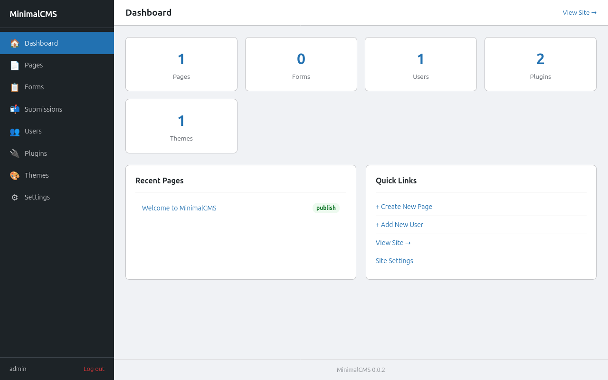
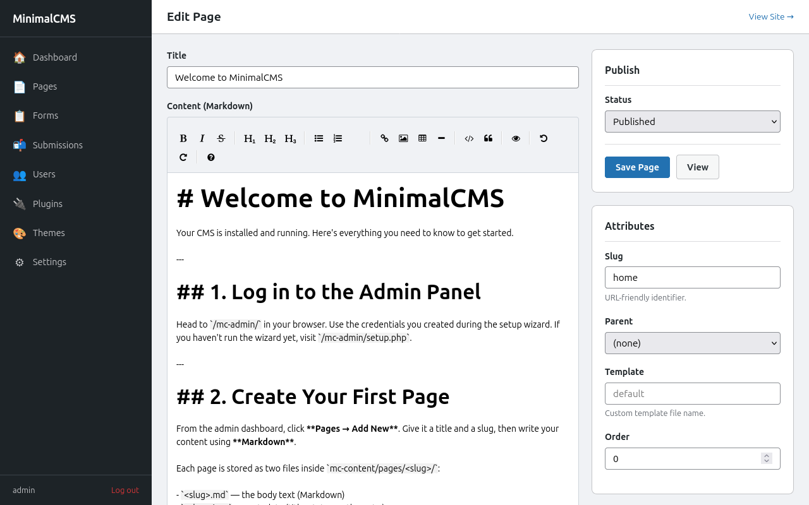
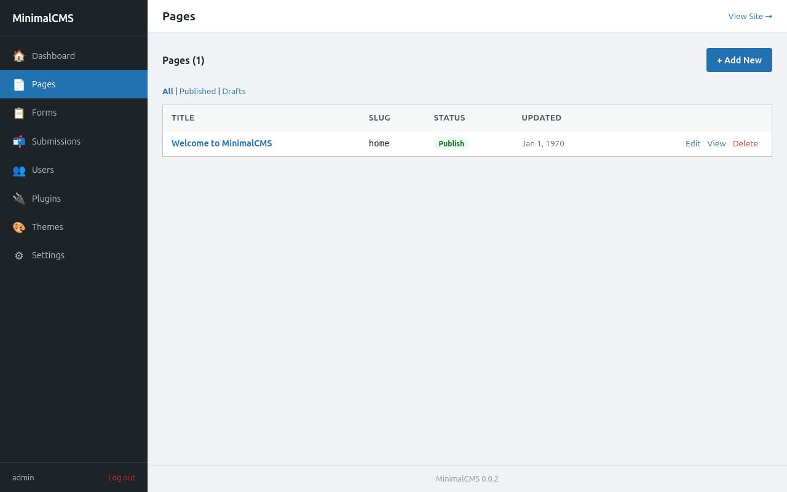
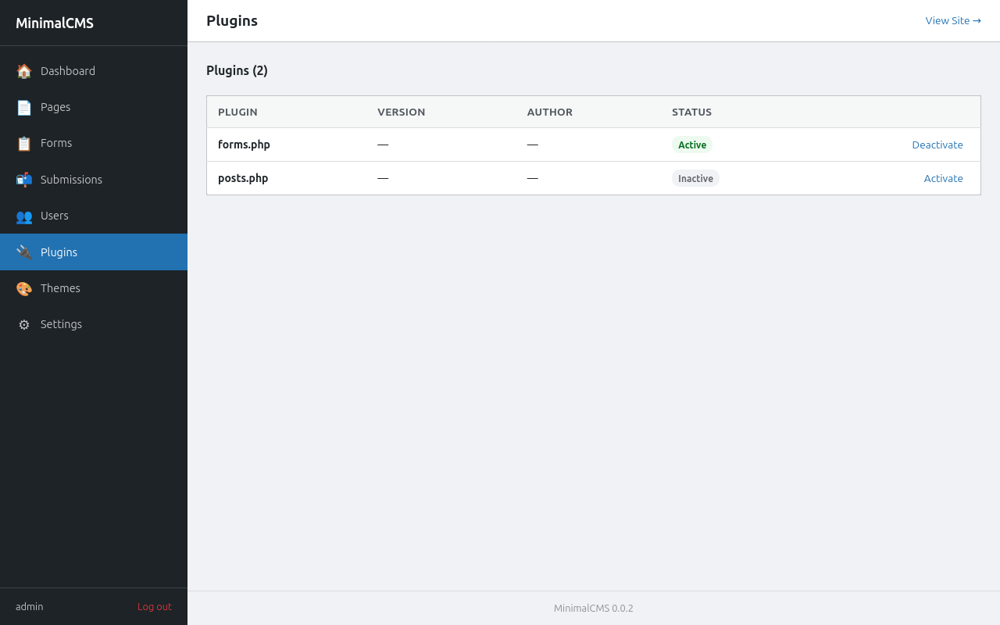
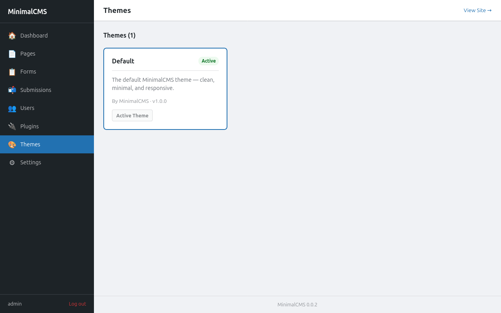
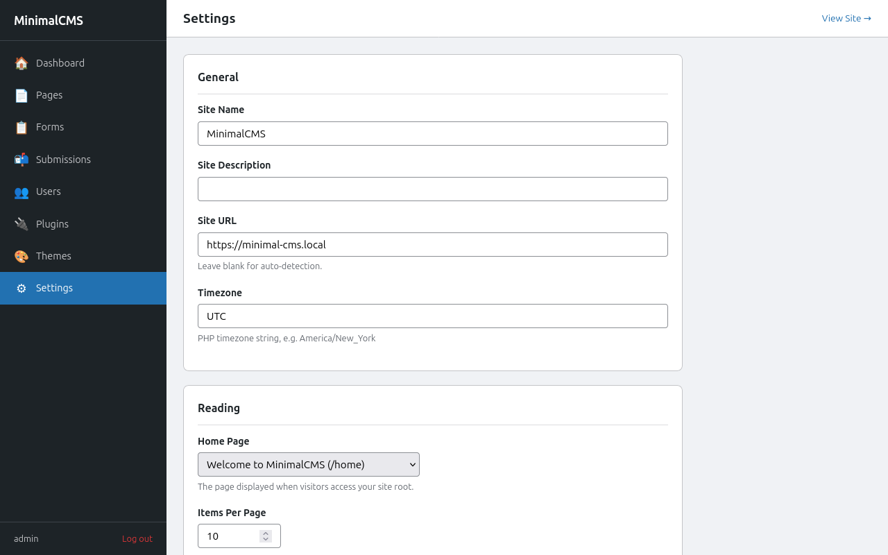

◆ v0.0.4 — Early Development
A CMS that gets
out of your way
MinimalCMS is a flat-file PHP CMS with a familiar hook, plugin, and theme architecture — no database, no framework, no container required.
MinimalCMS is a flat-file PHP CMS with a familiar hook, plugin, and theme architecture — no database, no framework, no container required.
MinimalCMS borrows the best ideas from multiple sources — hooks, plugins, themes, a clean admin panel — and strips away the database dependency entirely.
Write in Markdown. Metadata lives in a JSON sidecar next to each file. No migration scripts, no schema changes — just folders.
[tag attr="val"]Applying security at every layer so you can focus on building, not patching.
sodium_crypto_secretbox (256-bit)mc-data/ double-locked: Apache Deny all + PHP die()Actions and filters run at well-defined points throughout the request lifecycle.
mc_add_action / mc_add_filterA full template hierarchy so themes can override any part of the request, from 404s to custom content-type archives.
theme.php manifest with metadataA built-in role & capability system with four built-in roles and full CRUD from the admin panel.
mc_user_can() / mc_current_user_can()mc_add_cap()Pre-configured tooling means you can clone, run tests, and start building within minutes.
A tour of the admin panel and front-end rendering.






Every HTTP request flows through a single front controller. There is no routing framework — just PHP includes and a clean hook system.
index.php.minimalcms/ ├── index.php # front controller ├── .htaccess # rewrite all → index.php ├── config.php # keys in encrypted keystore, active theme/plugins ├── mc-load.php # constants & autoload ├── mc-settings.php # boot sequence ├── mc-includes/ # core libraries │ ├── hooks.php │ ├── rewrite.php │ ├── content.php │ ├── user.php │ └── … ├── mc-content/ # all user data │ ├── pages/ │ ├── plugins/ │ └── themes/ │ └── default/ ├── mc-admin/ # admin panel │ ├── login.php │ ├── setup.php │ ├── index.php # dashboard │ └── … └── mc-data/ # encrypted; Deny all └── users.php
MinimalCMS requires only PHP 8.2+ and Apache with mod_rewrite.
No database. No container.
Download or git clone into your web root.
Run composer install for tests & linting. Not needed for production.
Set the document root to the project folder and enable mod_rewrite.
Visit /mc-admin/ — the setup wizard creates your config and first admin account.
# 1. Clone
git clone https://github.com/namithj/MinimalCMS.git my-site
cd my-site
# 2. Install dev dependencies (tests & linting only)
composer install
# 3. Point Apache at the project root and enable mod_rewrite
# 4. Open the admin panel — setup wizard runs on first visit
open http://your-site.local/mc-admin/
# ── Optional: build CSS assets ──────────────────────────────────
npm install
npm run build
# ── Optional: run tests ─────────────────────────────────────────
composer test:unit
composer test:integration
| Requirement | Version / Detail | Notes |
|---|---|---|
| PHP | 8.2+ | Sodium bundled since 7.2; tested on 8.3 |
| Web server | Apache + mod_rewrite | .htaccess included |
| Disk access | Write on project root | Config, content, sessions, and cache are written at runtime |
| Database | None | Flat files only ✓ |
{kind=link}
{kind=link}
{kind=link}
{kind=link}
{kind=link}
{kind=link}